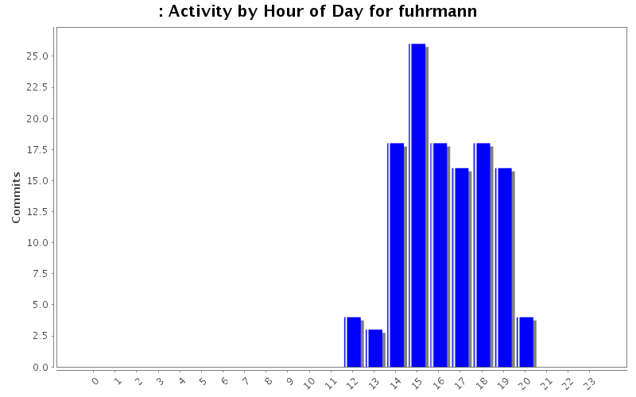
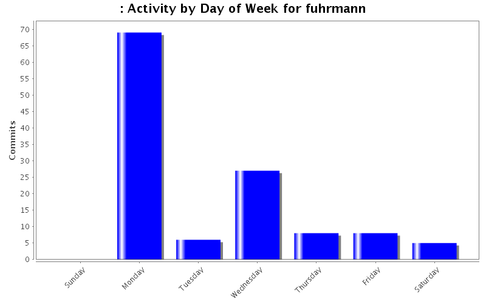
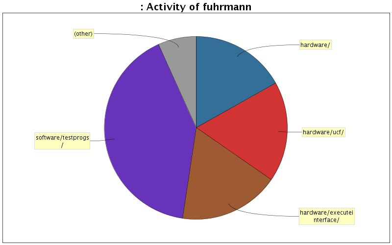

| Directory | Changes | Lines of Code | Lines per Change |
|---|---|---|---|
| Totals | 123 (100.0%) | 5766 (100.0%) | 46.8 |
| software/testprogs/ | 8 (6.5%) | 2359 (40.9%) | 294.8 |
| hardware/executeinterface/ | 37 (30.1%) | 1026 (17.8%) | 27.7 |
| hardware/ucf/ | 22 (17.9%) | 1021 (17.7%) | 46.4 |
| hardware/ | 29 (23.6%) | 973 (16.9%) | 33.5 |
| documentation/ | 21 (17.1%) | 161 (2.8%) | 7.6 |
| hardware/peripheralinterface/ | 2 (1.6%) | 125 (2.2%) | 62.5 |
| software/assembled_progs/avg/ | 3 (2.4%) | 101 (1.8%) | 33.6 |
| / | 1 (0.8%) | 0 (0.0%) | 0.0 |

updated final presentation powerpoint and visio diagram
0 lines of code changed in 2 files:
added final presentation powerpoint
0 lines of code changed in 1 file:
Fixed alu bug with LSR
2 lines of code changed in 1 file:
Added random byte LFSR stuff. at location 04in mmr
79 lines of code changed in 3 files:
Added LFSR for 8bit random number
45 lines of code changed in 1 file:
Fixed LE flag
1 lines of code changed in 1 file:
Fixed vga accumbyte stall issue
9 lines of code changed in 2 files:
Fixed halt logic
9 lines of code changed in 2 files:
jj
53 lines of code changed in 2 files:
added new avg binary file
48 lines of code changed in 1 file:
Fixed accumbytes when vga stall on last cycle
2 lines of code changed in 1 file:
Fixed branching after branching and flag shit
20 lines of code changed in 2 files:
Irq status now sorta works on board with push buttons and dips
20 lines of code changed in 2 files:
fixed swp
1 lines of code changed in 1 file:
Added vga color mode
27 lines of code changed in 2 files:
Fixed mmrs for vgaframestate
11 lines of code changed in 2 files:
Fixed mmrs, irqstatus now works
141 lines of code changed in 1 file:
Fixed tst and teq
4 lines of code changed in 1 file:
added newmmmrr
407 lines of code changed in 1 file:
Updated ucf for mmr
8 lines of code changed in 1 file:
(47 more)